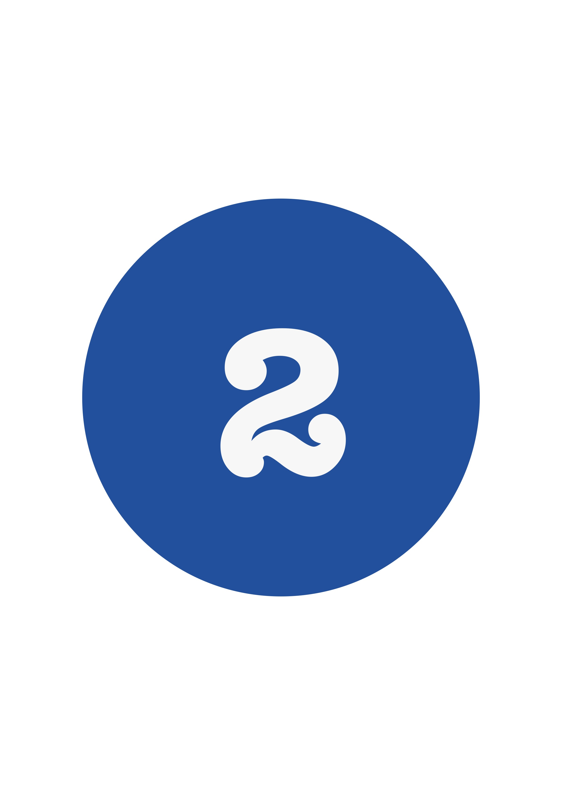

L’IA est désormais utilisée uniquement dans le secteur de la recherche, réduisant sa part énergétique.
Vous pouvez choisir de concentrer les efforts de recherche sur comment baisser la consommation en eau et en énergie de l’IA et des data-centers.

Utiliser l’IA pour chercher à baisser la consommation énergétique des IA et des data-centers
Faire ce choix